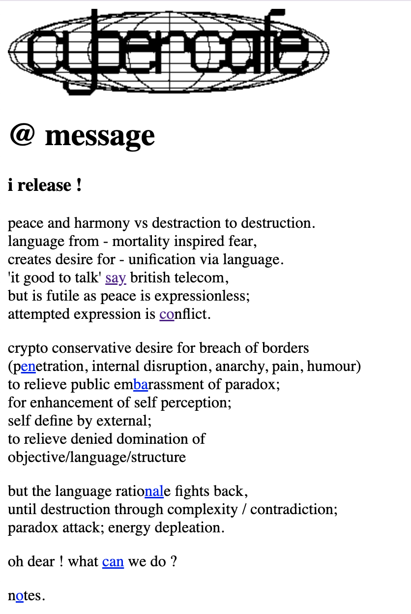
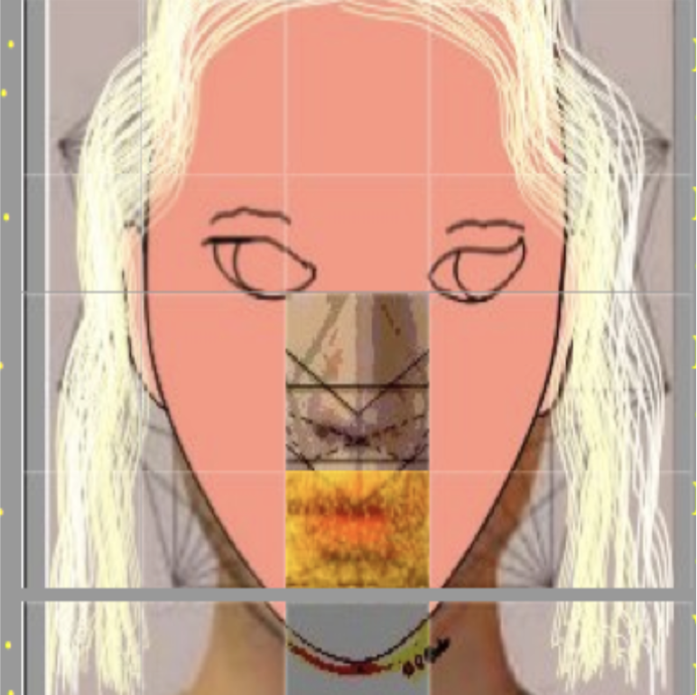
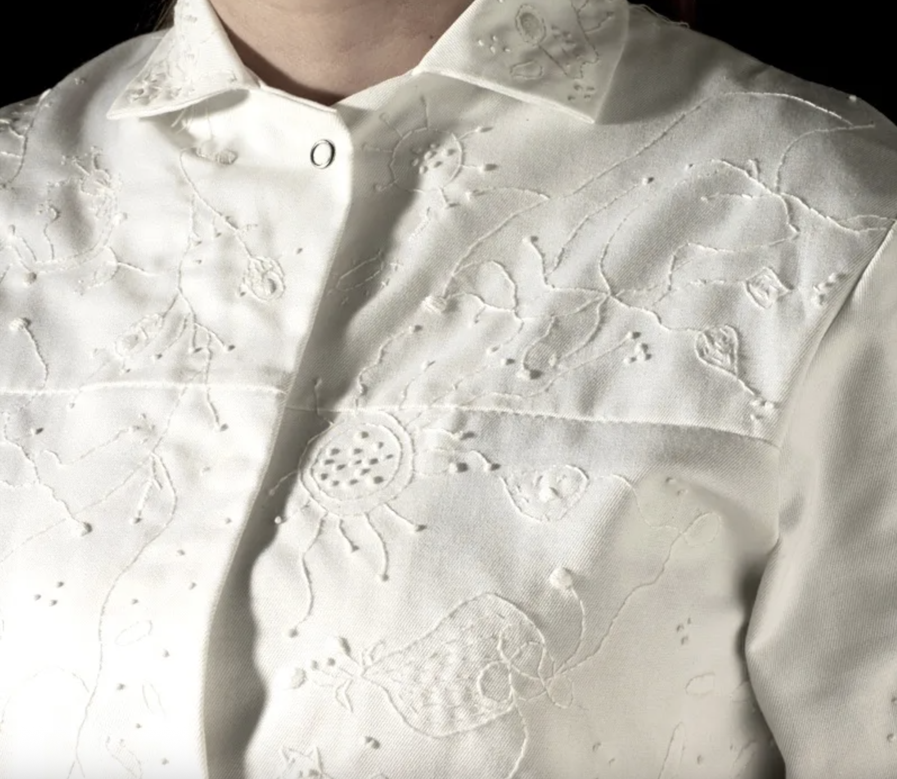
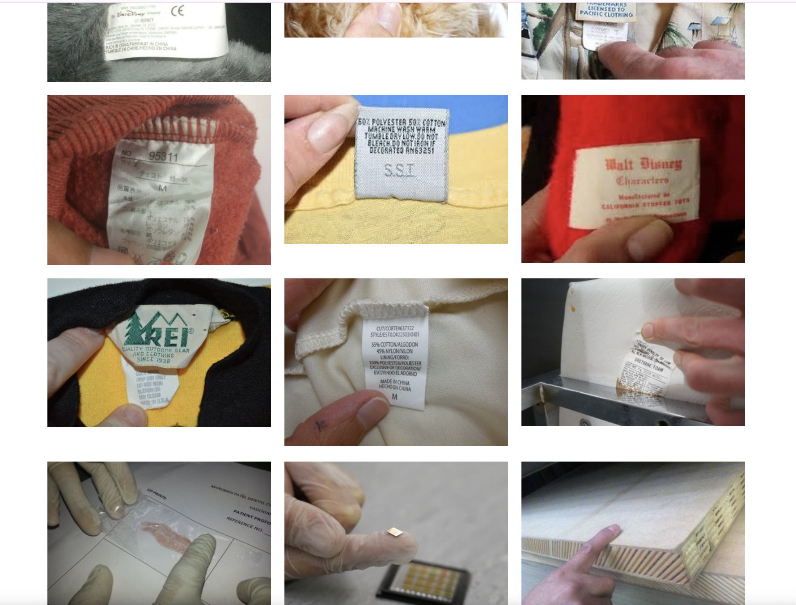
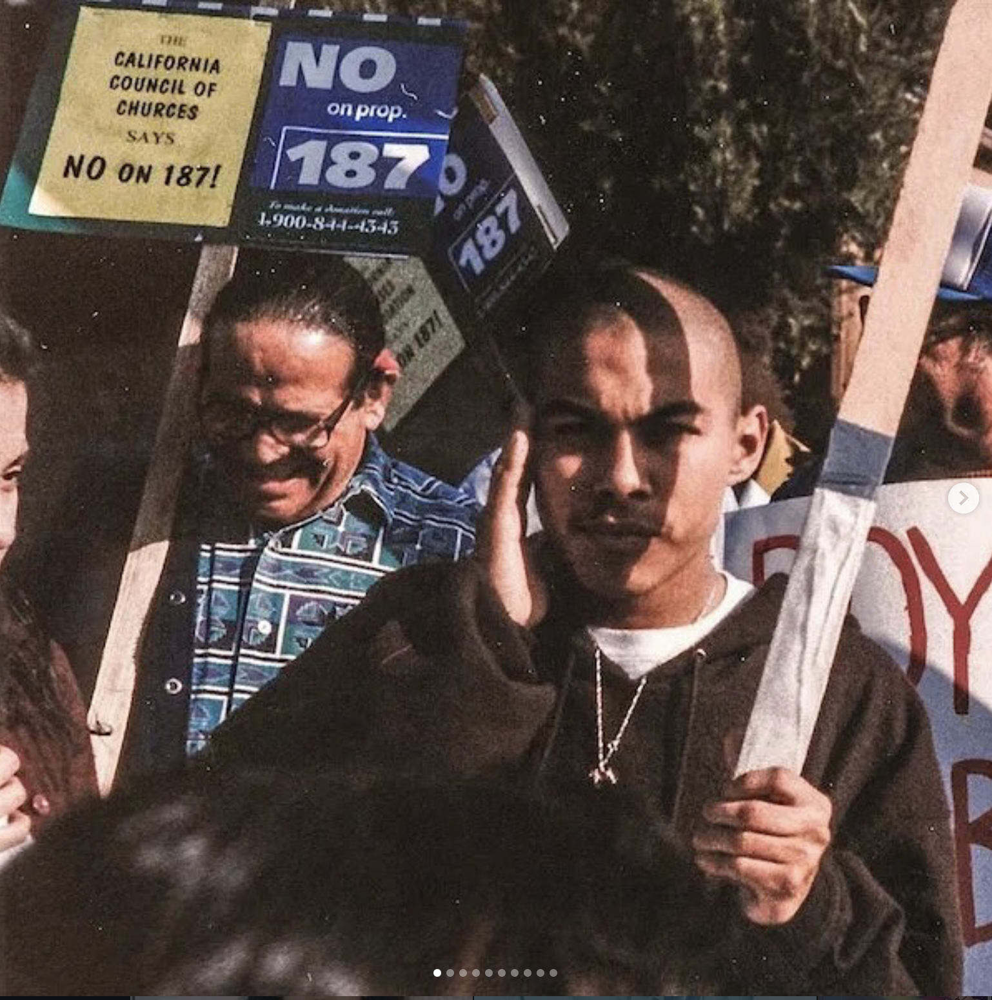

5 Inspiring Web Artists
Heath Bunting

The artists encourages human interaction and connection through his work. He asks us to think about our identity and our place in this world. He is intentional with color and where he places hyperlinks, making me think deeper about the meaning of the words he is highlighting.
Reginald Brooks

His work is interesting to look at because of the way he distorts humans. His work reminds me of how strange human life is and how many of us live on this planet together. His belief that human life will eventually be easy to alter is also interesting.
Anna Dumitriu

Dumitrius work sits at the intersection between art and science. Her work is very captivating because of how aesthetially pleasing she makes science look.
Dina Kelberman

Upon looking at some of this artists' work, I was confused. After reading her statement and discovering that she doesn't include "intentionally artistic" images in her work, I thought of how some of us may take the seemingly mundane things in our lives for granted.
Guadalupe Rosales

The way that this artists makes sort of a time capsule to remember underepresented groups is something I would like to do in the future. The sense of nostalgia she evokes in her work reminds me of how I would like to get users/viewers of my art to feel strong emotions.